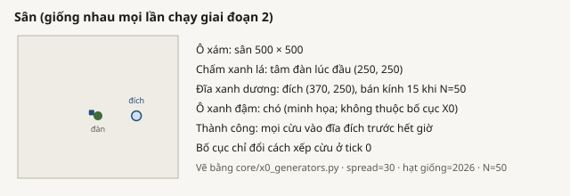
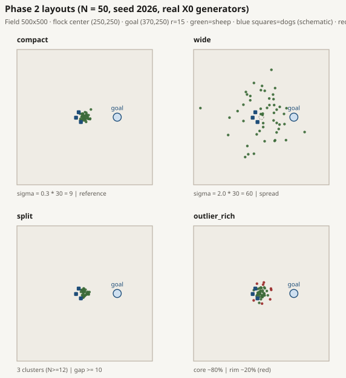
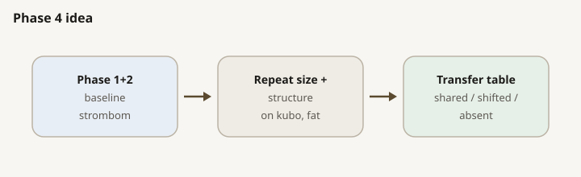
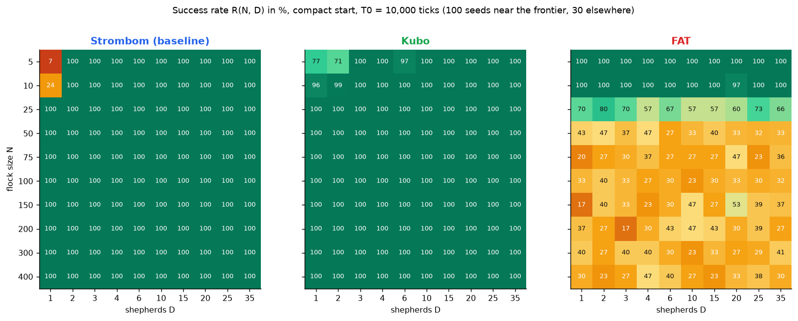
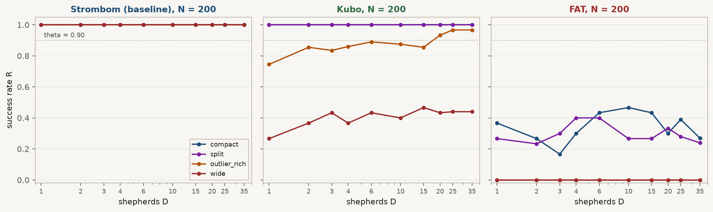
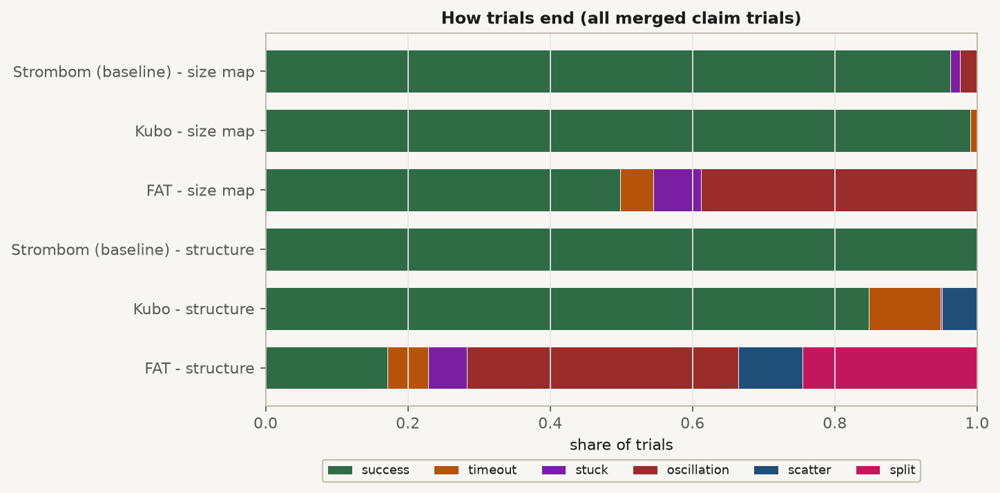

SUMMARY At a glance
QUESTION What Phase 4 asks
RQ4 / Package D: do size and structure frontiers transfer across the three required methods?
- C4: D_min / overcrowding shared across methods (including structure), or document where transfer is shifted / absent.
Baseline size and structure already measured in Phases 1 and 2. This phase does not re-run strombom_multi.
DESIGN What we froze
| Choice | Value |
|---|---|
| Methods | kubo, fat (vs Phase 1/2 strombom_multi) |
| Size N / D | same grids as Phase 1; compact start only |
| Structure N / layouts | {50,100,200} x the four X0 families (see Layouts) |
| theta / T0 | 0.90 / 10,000 |
| Seeds | scout 30; claim 100; Kubo outlier_rich N=200 uses 200 seeds on D in {1,2,3,4,6,10,15,20,25} |
| obs_mode | global |
DESIGN Layouts

Size transfer uses compact only. Structure transfer reuses the same four X0 families as Phase 2, on the same arena rules, so method contrasts are not confounded with a new layout set. Shared / shifted / absent labels are reported in Results.

| Layout | Generator definition | Role in the design |
|---|---|---|
| compact | Gaussian, sigma = 0.3 x 30 = 9 | Tight reference flock (Phase 1 baseline geometry) |
| wide | Gaussian, sigma = 2.0 x 30 = 60 | Spread flock that must be collected first |
| split | 2 clusters if N < 12, else 3; separation at least 10 | Clustered start (check layout) |
| outlier_rich | Core ~80% (sigma = 12); ~20% outliers beyond r_a * N^(2/3) | Core plus stragglers |
Transfer reading rule

RUN How we ran it
| Step | Trials |
|---|---|
| kubo size scout / claim | 3,000 / 2,100 |
| kubo structure scout / claim | 3,600 / 4,000 |
| fat size scout / claim | 3,000 / 2,000 |
| fat structure scout / claim | 3,600 / 2,400 |
Kubo structure claim has 4,000 rows: outlier_rich N=200 uses 200 seeds on D in {1,2,3,4,6,10,15,20,25} (../kubo_structure/claim/).
make -C scaling scaling-transfer-size-scout TRANSFER_METHOD=kubo WORKERS=16 make -C scaling scaling-transfer-size-claim-reseed TRANSFER_METHOD=kubo WORKERS=16 # repeat fat; then structure scout/claim for kubo and fat
RESULTS Results

Size-map D_min (compact, theta=0.90)
| N | strombom | kubo | fat |
|---|---|---|---|
| 5 | 2 | 3 | 1 |
| 10 | 2 | 1 | 1 |
| 25 to 400 | 1 | 1 | none <= 35 |
No overcrowding on compact size maps. FAT best R per N for N=50 to 400 is 0.40 to 0.53. Package D size: 8 shared, 7 shifted, 29 absent.
Structure D_min
| Layout | N | strombom | kubo | fat |
|---|---|---|---|---|
| compact / split | 50,100,200 | 1 | 1 | none |
| outlier_rich | 50,100 | 1 | 1 | none |
| outlier_rich | 200 | 1 | 20 (200 seeds) | none |
| wide | 50,100,200 | 1 | none (best R 0.47 to 0.54) | none (R=0) |


RESULTS Kubo outlier_rich N=200 (stated once)
D = 1,2,3,4,6,10,15 stay below 0.90 at 200 seeds (R = 0.745, 0.855, 0.835, 0.860, 0.890, 0.875, 0.855). D_min = 20 at 200 seeds (R = 0.935); D = 25 also at 200 seeds (R = 0.910). D = 35 remains at 30 seeds (R = 0.967). Bootstrap interval on D_min is [2, 20]. No overcrowding.

CLAIMS Claim C4
Verdict: SUPPORTED (partial).
C4 asks whether D_min / overcrowding transfer across the three methods, including structure. The measured answer is mixed: transfer holds on one slice and fails on others. That is why the label is partial, not full support and not a full reject.
Why only partial (not full support)
- Shared slice: on compact size, Kubo and strombom_multi both have D_min = 1 for every N >= 25.
- Absent for FAT: FAT never reaches R >= 0.90 for any D <= 35 when N >= 25 (size and every structure layout).
- Absent for Kubo wide: best R stays about 0.47 to 0.54; no D_min in the frozen grid.
- Shifted for Kubo outlier_rich N=200: D = 1..15 stay below theta at 200 seeds; D_min = 20 at 200 seeds (bootstrap [2, 20]).
- Tiny-N size rows are shifted even where transfer is otherwise close (N = 5, 10).
Size-only reading would overstate C4. The structure map is the binding contrast: controller choice can erase the baseline D_min = 1 answer even when compact size looked shared.
Measured transfer labels
| Property | kubo vs strombom | fat vs strombom |
|---|---|---|
| D_min size N>=25 | shared | absent |
| D_min size N=5,10 | shifted | shifted |
| Overcrowding size | absent (neither overcrowds) | absent |
| Structure compact / split | shared (D_min = 1) | absent |
| Structure wide | absent | absent |
| Structure outlier_rich N=200 | shifted (D_min = 20) | absent |
Verified evidence (claim merges and Package D tables)
Docs and trackers are not evidence. The verdict rests on these measured files:
- ../package_d/size/transfer_summary.csv, ../package_d/size/transfer_table.csv
- ../package_d/structure/frontier_by_method_layout.csv and transfer_*.csv
- ../kubo_size/claim/packages/a/, ../fat_size/claim/packages/a/ (frontiers / reliability)
- ../kubo_structure/claim/merged_trials.csv, merged_dmin_bootstrap.csv, outlier_rich_n200_window.json
- Baseline contrast already fixed in Phase 1 / Phase 2 claim merges (strombom_multi)
What would make the conclusion complete
Two different “complete” endings are possible; they are not the same claim:
- Complete as a transfer map (current C4 wording): already claim-grade for the mixed shared / shifted / absent labels above. No further run is required to keep the partial verdict.
- Complete as full method transfer (all methods share D_min / overcrowding on size and structure): not supported by current data. To reach that stronger conclusion you would need new claim-grade evidence that (a) FAT reaches R >= 0.90 for N >= 25 on compact and on the structure layouts, and (b) Kubo reaches R >= 0.90 on wide. Under obs_mode=global and the frozen grids, FAT and Kubo-wide currently fail that bar. A redesign (for example local sensing / Phase 5 ladders) would be a new experiment, not a re-label of this one.
LIMITS Limits
- Kubo outlier_rich N=200 D_min bootstrap remains wide ([2, 20]) because several D < 20 sit near theta.
- D = 35 on Kubo outlier_rich N=200 remains at 30 seeds.
- No overcrowding cells; Phase 3 / C2b stay skipped.
- obs_mode fixed to global; Phase 5 ladders not run.
NEXT Next
- Do not treat full cross-method transfer as settled without new FAT / Kubo-wide evidence (see claims section).
- Cross-phase write-up: ../../summary/SUMMARY_REPORT.html.
APPENDIX Raw data
| Path | What |
|---|---|
| ../kubo_size/claim/ | Kubo size claim + Package A |
| ../fat_size/claim/ | FAT size claim + Package A |
| ../kubo_structure/claim/ | Kubo structure claim |
| ../fat_structure/claim/ | FAT structure claim |
| ../package_d/size/ | Package D size transfer tables (CSV) |
| ../package_d/structure/ | Package D structure frontiers / transfer CSVs |